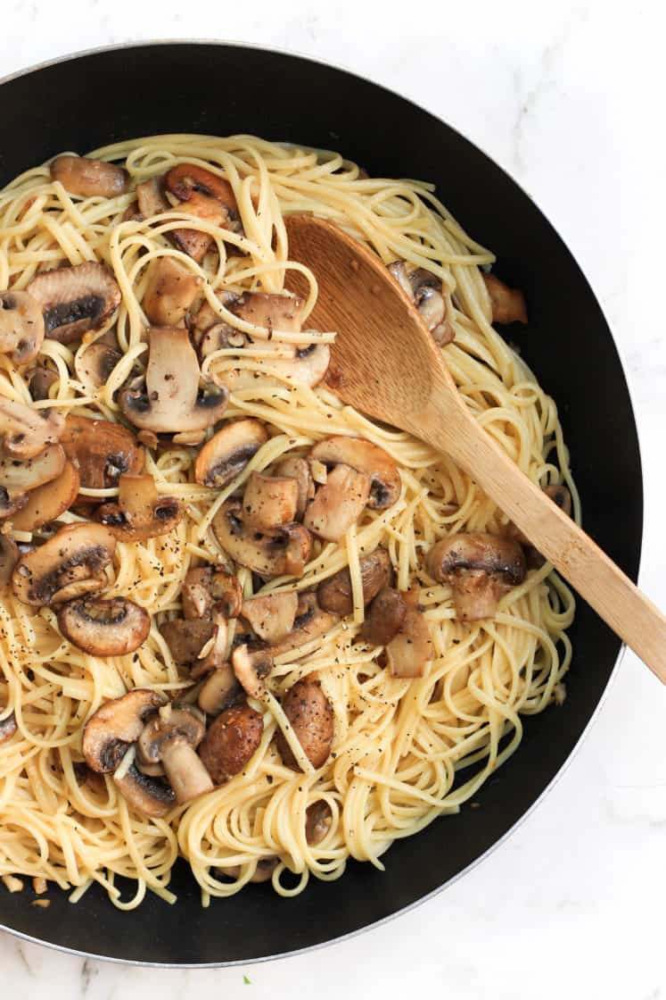

Making Aglio e Olio

Ingredients
- Linguine
- 1/3 cup Olive oil
- 7-8 cloves of crushed garlic
- Salt
- Parmesan
- Mushroom
Recipe
- Boil linguine in salted water until al dente. Reserve a cup of pasta water
- Heat a tablespoon of olive oil in a pan and add mushrooms. Do this as the pasta is boiling
- Add rest of olive oil and crushed garlic until golden brown. Add reserved cup of pasta water and reduce until emulsifies (2-3 mins)
- Add the cooked pasta. Top with grated parmesan.